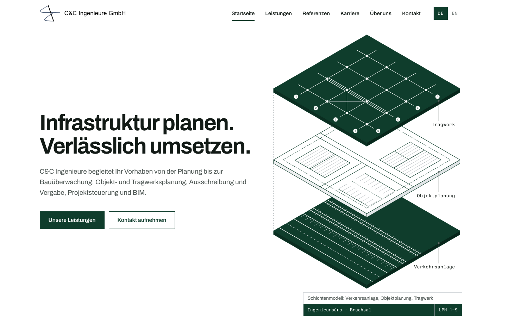
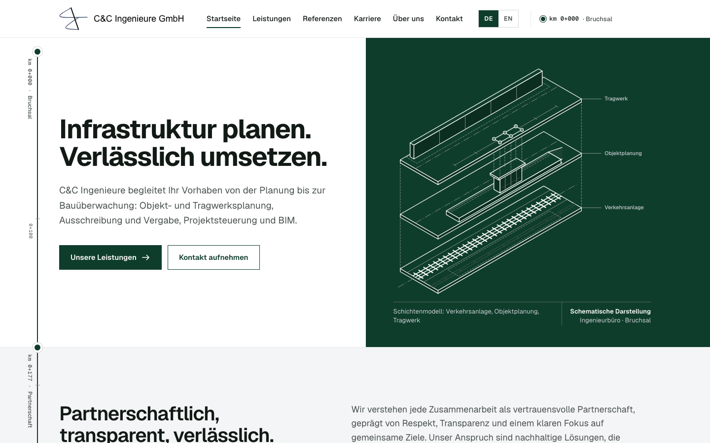
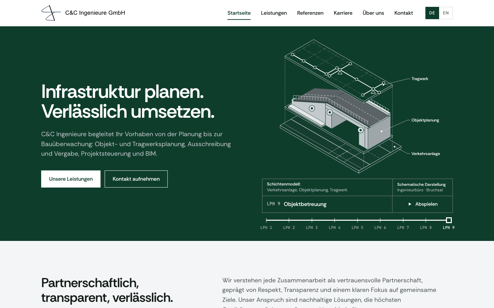

P1 «Schichten»Am nächsten an Ihrem Entwurf. Das Schichtenmodell baut sich beim Laden auf und öffnet sich beim Scrollen Schicht für Schicht.StartseiteLeistungenReferenzenKarriereÜber unsKontaktImpressum
P2 «Trasse»Eine Trasse mit Stationierung läuft durch die Seite und zeichnet sich beim Scrollen. Mehr Grün in den Leistungen und Leistungsphasen.StartseiteLeistungenReferenzenKarriereÜber unsKontaktImpressum
P3 «Phasen»Ein Bauwerk durchläuft im Hero alle neun HOAI-Leistungsphasen. Die Phasen lassen sich selbst durchblättern. Der stärkste Grünanteil.StartseiteLeistungenReferenzenKarriereÜber unsKontaktImpressum